CS184/284A Spring 2025 Homework 4 Write-Up
Link to webpage: cal-cs184-student.github.io/hw-webpages-super-awesome-team/hw3/index.html Link to GitHub repository: Github

Overview
In ClothSim, we implemented a real-time cloth simulation using a mass-and-spring system. The assignment involved building data structures to represent the cloth, applying physical constraints, and using numerical integration to simulate realistic cloth movement over time. Key components included handling collisions with external objects and self-collisions to prevent clipping. The project also incorporated shaders to enhance visual realism.
Part 1: Masses and springs
| 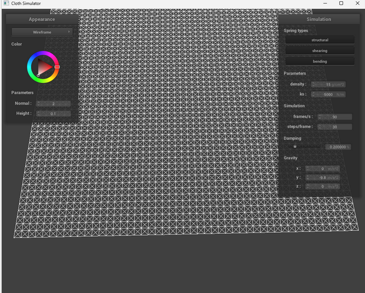 | 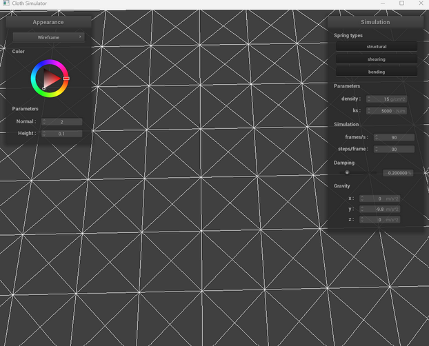 |
| 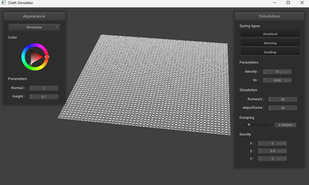 |
We implemented a cloth simulation using a mass-spring system with different constraint types:
|
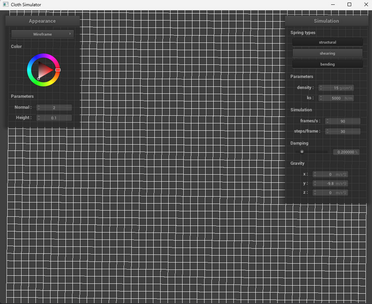
|
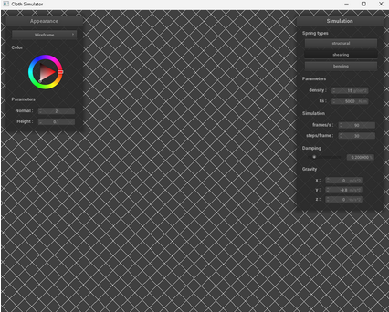
|
|
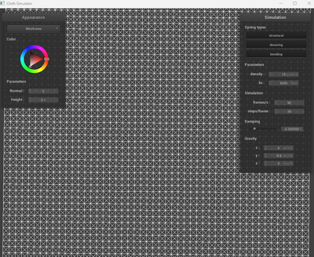
|
Part 2: Simulation via numerical integration
At final resting state, the cloth drapes naturally under gravity with pinned corners creating symmetric folds. It settles after ~5 seconds with minor oscillations.
Parameters:
- ks (spring stiffness):
- Low ks (500): Cloth stretches easily, sagging under gravity 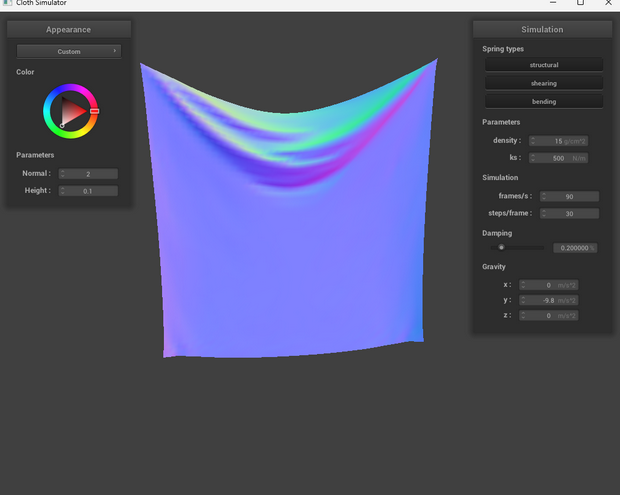
- High ks (50000): Cloth resists deformation, appears rigid 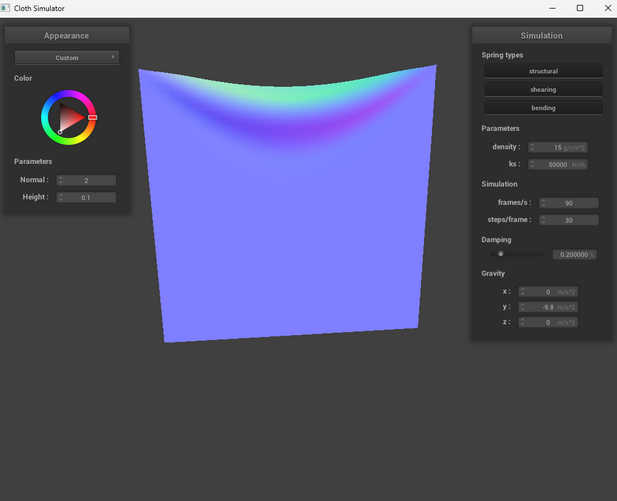
- Density:
- Low (1.5): Cloth floats down slowly like silk 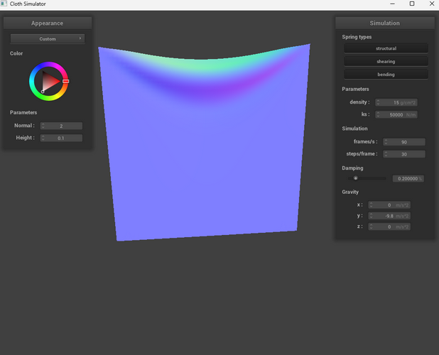
- High (150): Cloth falls aggressively like denim 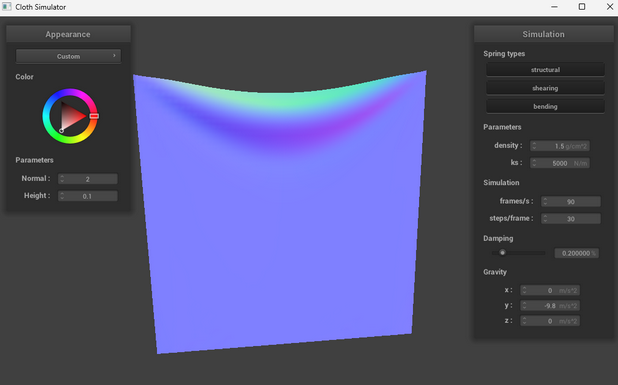
- Damping:
- Low (0%): Cloth oscillates endlessly 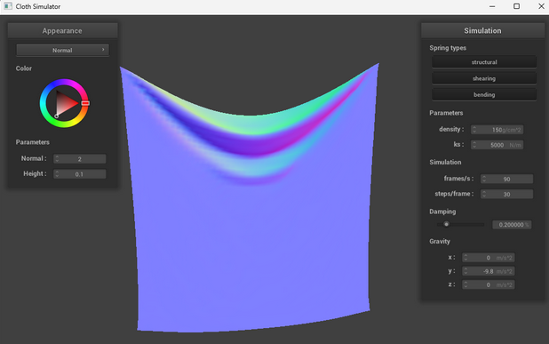
- High (1%): Cloth settles quickly but looks sluggish 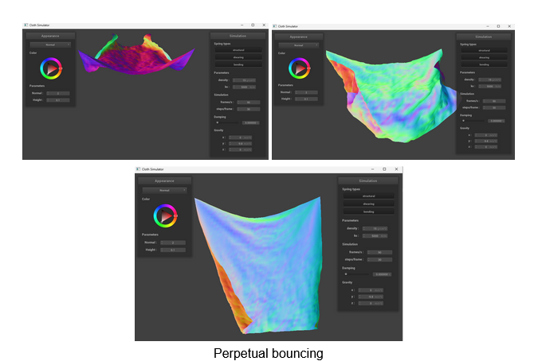
- Coth practically stiffens mid-fall 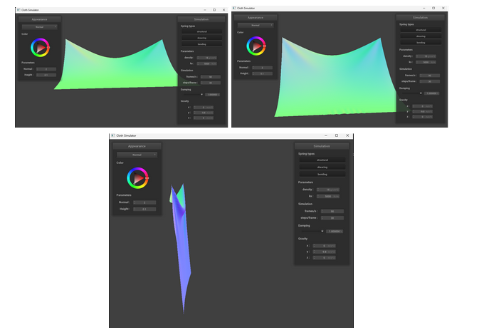
Part 3: Handling collisions with other objects
Implementation Details:
Sphere Collision:
- Check if a point mass is inside the sphere (dist < radius)
- Compute the tangent point (where the point should rest on the sphere's surface)
- Adjust the position using:
pm.position = pm.last_position + (1.0 - friction) * (tangent_point - pm.last_position) - Friction scales the correction to simulate energy loss
Plane Collision:
- Check if a point mass crossed the plane (sign change in dot(pm.position - point, normal))
- Find the intersection point with the plane
- Apply a small SURFACE_OFFSET to prevent sticking
- Adjust position with friction using:
pm.position = pm.last_position + (1.0 - friction) * (tangent_point + offset - pm.last_position)
|
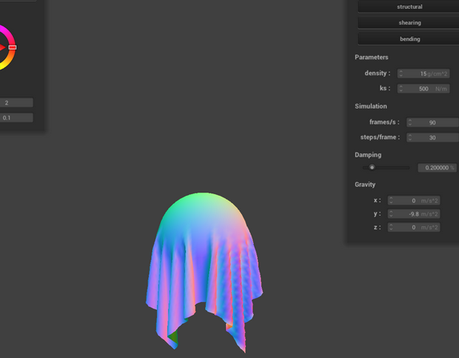
|
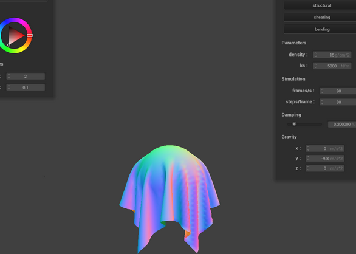
|
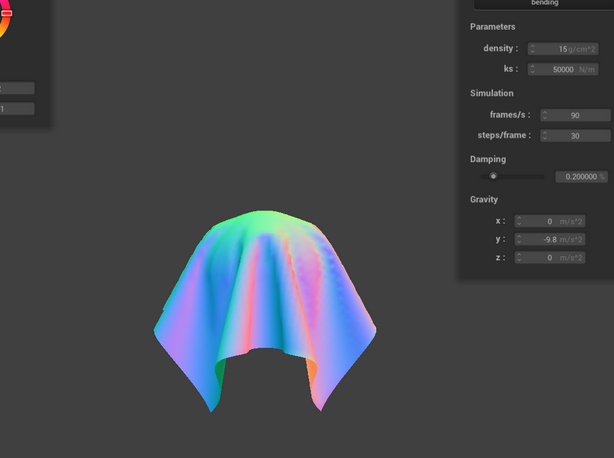
|
Low ks cause overstretching, while high ks resist deformation. Provot correction keeps springs intact during collisions.
Part 4: Handling self-collisions
Implementation Details:
To prevent cloth clipping through itself, we use spatial hashing (an efficient alternative to brute-force pairwise checks).
Cloth::hash_position
- Partition 3D space into uniform cells (dimensions: w = 3 * width/num_width_points, h = 3 * height/num_height_points, t = max(w, h))
- Maps a 3D position to a unique cell ID using prime-number hashing:
return x * 73856093 ^ y * 19349663 ^ z * 83492791;(primes reduce hash collisions)
Cloth::build_spatial_map
- Groups point masses into spatial cells:
float hash = hash_position(pm.position); map[hash]->push_back(&pm);
Cloth::self_collide
- For each point mass, find nearby masses via spatial hash lookup
- Apply repulsive corrections if distances < 2 * thickness:
Vector3D correction = (2 * thickness - dist) * dir.unit(); - Average corrections and scale by 1/simulation_steps for stability
Self-Collision Stages:
Early Self-Collision:
Initial folds form as cloth collapses
|
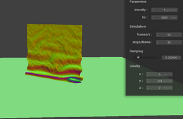
|
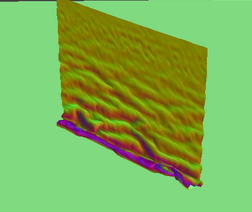
|
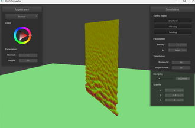
|
Initial Self-Collision:
Complex self-interactions create wrinkles
|
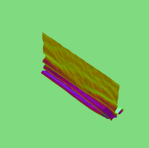
|
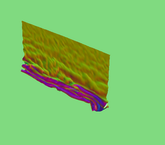
|
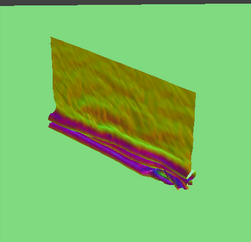
|
Ending Self-Collision:
Cloth settles (may remain slightly bouncy)
|
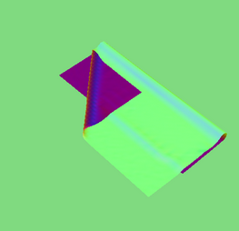
|
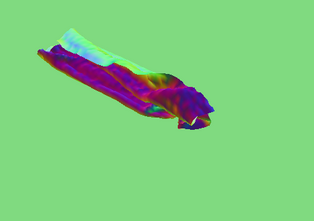
|
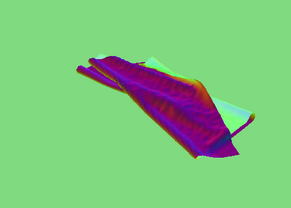
|
Parameter Effects:
- Low ks: Cloth stretches excessively, forming deep folds. Self-collisions are less resolved (more overlap)
- High ks: Cloth resists folding, appearing stiff. Fewer wrinkles, but cleaner collisions
- Low density (5 g/cm²): Cloth falls slowly, drapes softly
- High density (15 g/cm²): Rapid drop with heavy, pronounced folds
Part 5: Shaders
Shader Overview
A GPU program that processes vertices (vertex shader) or pixels (fragment shader) in parallel.
Blinn-Phong Shading Model
\[ L = k_aI_a + k_d\left(\frac{I}{r^2}\right)\max(0,n \cdot l) + k_s\left(\frac{I}{r^2}\right)\max(0,n \cdot h)^p \]
|
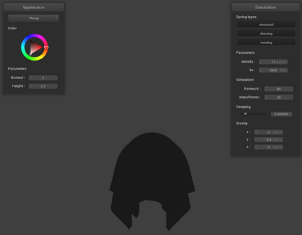
Flat base lighting (no shadows) |
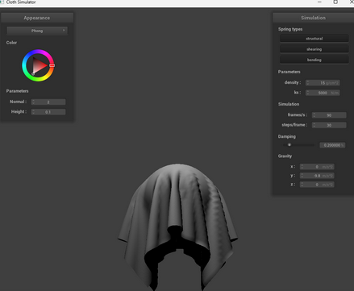
Lambertian reflectance |
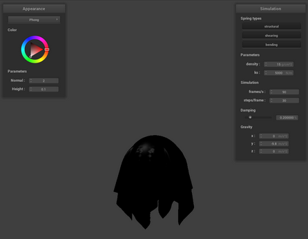
Glossy highlights (view-dependent) |
|
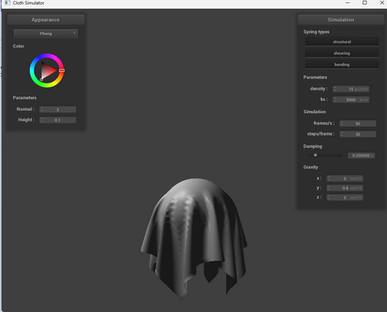
All components working together |
||
Texture Mapping
Bump vs. Displacement Mapping
|
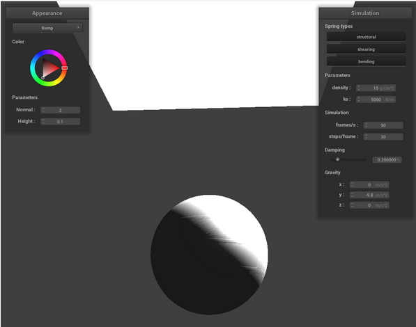
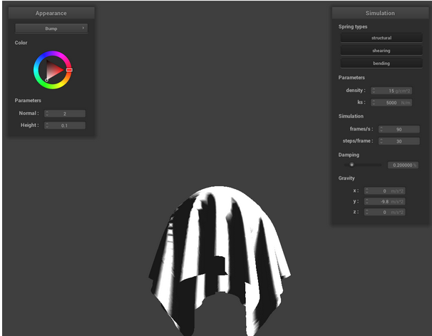
Surface normals modified without geometry change |
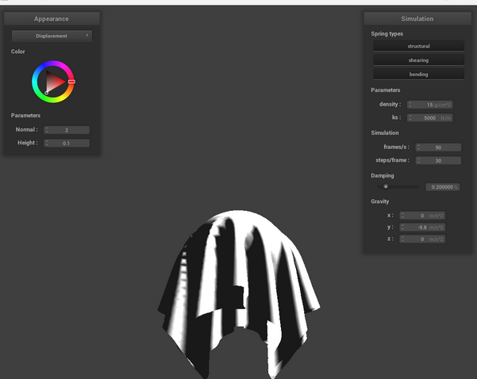
Actual geometry displacement |
Sphere Coarseness Comparison
|
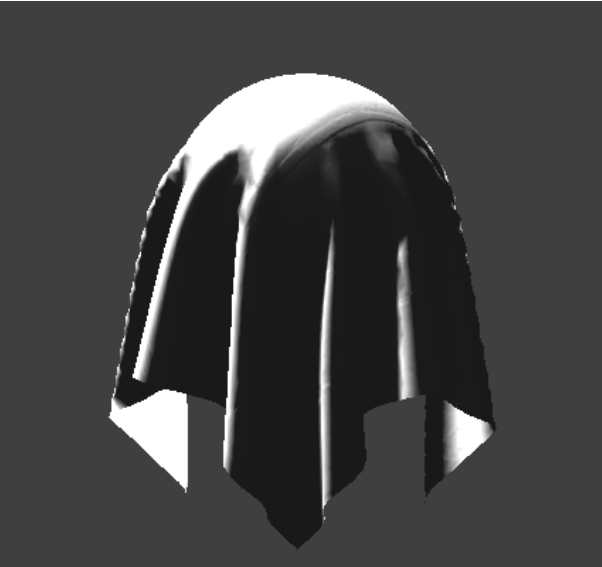
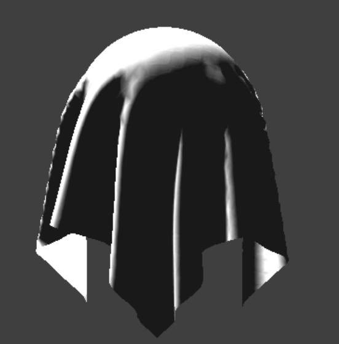
Visible artifacts in displacement mapping |
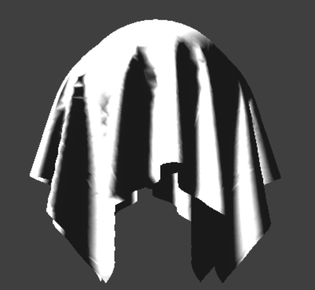
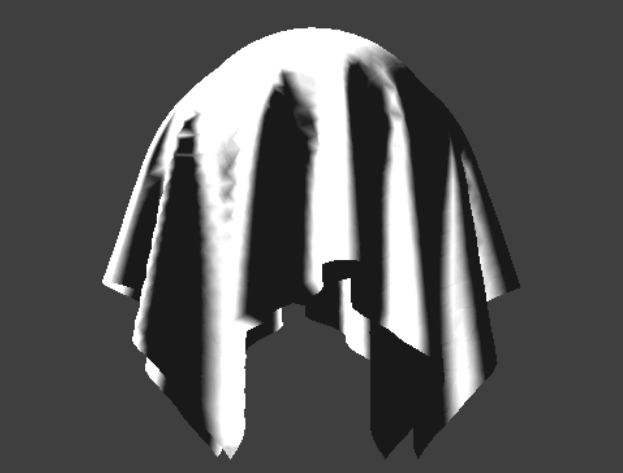
Smooth displacement results |
Mirror Shader Implementation
Custom Shader Composition
- Base Layers:
- Diffuse (u_texture_1)
- Normal (u_texture_2)
- Roughness (u_texture_3)
- Ambient Occlusion (u_texture_4)
- Features:
- Bump-mapped surface wrinkles
- Roughness-controlled specular highlights
- Subtle environment reflections (30% intensity)
- Texture-size-aware sampling optimization